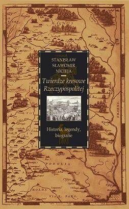

Twierdze Kresowe Rzeczypospolitej
Twierdze kresowe Rzeczypospolitej. Historia, legendy, biografie
"W latach 2004-2005 z ekipą Telewizji Polskiej w składzie: Jerzy Janicki - reżyser, Henryk Janas - operator, [...] kręciliśmy dziesięcioodcinkowy film dokumentalny Twierdze kresowe Rzeczypospolitej. Dzięki terenowemu samochodowi, który mieliśmy do dyspozycji, przemierzyliśmy setki kilometrów i niezmierzone obszary dawnych ziem Rzeczypospolitej zamknięte w trójkącie miast: Żółkiew-Kamieniec Podolski-Krzemieniec. [...] Tropiliśmy ślady polskości, rejestrując kamerą filmową i aparatem fotograficznym ruiny dawnych fortec, zamków, magnackich i szlacheckich rezydencji, opuszczone, zapomniane cmentarze, zrujnowane kaplice i kapliczki. [...] Na szlakach naszej wędrówki spotykaliśmy różnych ludzi, często o zadziwiających biografiach, pasjonatów historii, amatorów, kolekcjonerów, konfabulatorów, dziwaków, którzy mimo rozmaitych zdolności i temperamentów połączeni byli zamiłowaniem i zauroczeniem historią tych ziem. Od nich też czasem zdobywaliśmy rzadkie, unikatowe wręcz dokumenty, stare ryciny, pożółkłe gazety, fotografie rodzinne i widokówki. Gdy wróciłem do Opola, to wszystko stało się dla mnie materią do napisania książki. Można ją traktować jako rozbudowany komentarz do wspomnianego wyżej filmu dokumentalnego. I stąd zamierzona jej niejednorodność, gdyż nie zamierzałem pisać tylko o ruinach niegdyś sławnych i pięknych, a dziś obróconych w perzynę zamków, ale również o ludziach, którzy z tymi miejscowościami i okolicami byli związani swymi biografiami i swymi czynami."
ze wstępu autora